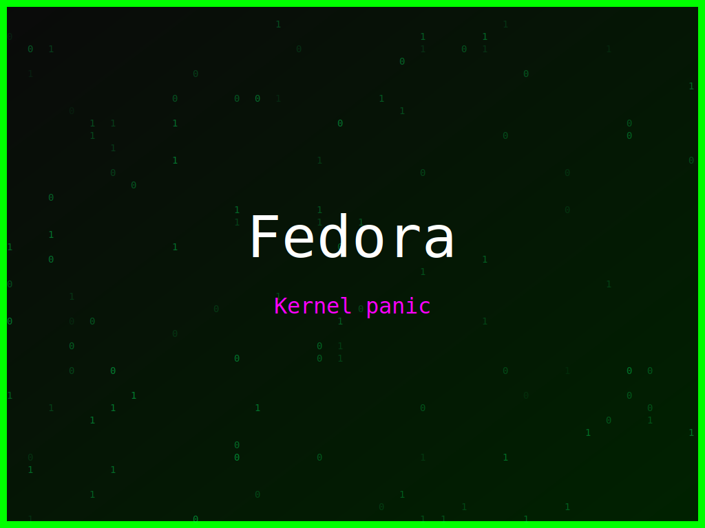

<section class="post-content">


    <div class="details-container">
       
        
        <ul class="details-list">
            <li><strong>Autor:</strong> piolinux</li>
            <li><strong>Descrição:</strong> Wallpaper Fedora que brinca com a prática de copiar e colar código, com toques de matrix.</li>
            <li><strong>Distro:</strong> Fedora</li>
            <li><strong>Frases:</strong> Ctrl+C Ctrl+V, Programar é divertido, Kernel panic</li>
            <li><strong>Tags:</strong> matrix, colorido</li>
        </ul>
        <a href="../galeria.html">Voltar para a galeria</a>||
        <a href="../wallpaper19.svg" download="wallpaper-fedora-ctrl-c-ctrl-v.svg">Baixar Wallpaper</a>
    </div>
>

</section>
